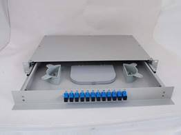
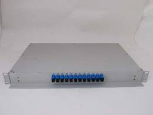

Fiber Optic Terminal Box 19GP（19寸光缆终端盒）

Mainly used for the connection before cables from outside plant to terminal facilities, with termination and splice tray.
Features
· 19’’ standard rack
· Rail-type tray
· SC/FC connector
· Solid cable retainer
· (Cold) welding and sc connector are suitable for optical distribution cable
· finely designed cable routing guarantees curvature radius of cable and fiber
Ordering Guide
NO. |
Type |
Dimension (mm) H*W*D |
Description |
1 |
19GP-F12a |
44*482*300 |
12Ports，FC |
2 |
19GP-F24a |
44*482*300 |
24Ports，FC |
3 |
19GP-F48a |
87*482*300 |
48Ports，FC |
4 |
19GP-S12a |
44*482*300 |
12Ports，SC |
5 |
19GP-S24a |
44*482*300 |
24Ports，SC |
6 |
19GP-S48a |
87*482*300 |
48Ports，SC |